Overview
The purpose of this document is to introduce you to some basic mathematical ideas in a strongly pragmatic environment and reinforce those ideas by examples in both R and python.
The focus of this document will be on practical applications.
Number Systems
At a certain point in your mathematical career you will need to expand your ideas about numbers. You will undoubtedly already have been exposed to some of these ideas:
- Natural Numbers: \(\left\{1,2,3, \cdots\right\}\) (some people include 0 in this set)
- Integers: \(\left\{\cdots,-3,-2,-1,0,1,2,3,\cdots\right\}\) (symbolized as \(\mathbb{Z}\))
- Rational Numbers: \(\left\{\frac{a}{b} | a,b \in \mathbb{Z} \right\}\)
- Real Numbers: : Numbers that naturally correspond to lengths. Typically represented using decimal notation, but with the understanding that the decimal expression of a number (consider \(\pi\)) may be infinite and non-repeating.
Mathematical notation uses \(\in\) to represent the set to which a variable belongs. FOr example, “\(n \in \mathbb{N}\)” means that \(n\) is a natural number. Whereas \(x \in \mathbb{Q}\) means that \(x\) is a rational number.
An operation takes two elements of one types and produces a third element of the same type. For example, addition is an operation on the real numbers. Consider the real numbers \(2.5\) and \(3.1\). Adding the two together produces the real number 5.6:
\[ 2.5 + 3.1 = 5.6 \]
We can define a subtraction operation on the real numbers, but on the natural numbers such an operation is only partially defined. For example, there are no natural numbers that correspond to \(2-3\). There are integers… but that is a different set of numbers.
The number systems I have described above have a natural “inclusion” which puts one inside of the next in a natural way:
\[ \mathbb{N} \subset \mathbb{Z} \subset \mathbb{Q} \subset \mathbb{R} \]
The inclusions are proper– which means as you move to the right, there are new elements that aren’t found previously. For example, the real numbers that are Not rational are called the irrational numbers.
It is a fun fact that \(\sqrt{2}\) is irrational.
Number systems on a computer
Mathematical number systems are, typically, infinite. That doesn’t work so well on a computer (they are notoriously finite). Review bits, bytes, (look up name), but the key idea is that on a computer number systems are finite sets. For example, a signed 8 bit integer can takes values from -128 to 127 and floating point numbers, although technically all floating point values are rational numbers they are more often thought of as real numbers (\(\mathbb{R}\)).
R has a fairly limited number of numeric types. Basically integers and floating points. The R variable .machine contains information about machine specific implementations of numeric formats. For example .machine$integer.max will reveal the largest integer to be 2147483647 (we can figure out how many bits this is using by taking the log base 2): log(base=2,.machine$integer.max). On the machine that I’m using to produce this document that value is 31… so we know that the integers are 32-bit integers. (we can use 31 bits for the positive values and we need the other bit to distinguish between positive and negative values. So the range of values is \(2^31-1\) to \(2^31\) [recall that we need one of those 320bit configurations to represent 0]).
The “float” (really, “double”) uses 8 bytes or 64 bits. The full range of what can be represented is complicated (refer to bits, bytes, etc). Recall that there are hidden “gotchas”. In particular, 0.1*3 is NOT equal to 0.3 in R. This is because as a binary decimaal, 0.1 is infinitely repeated (similarly as to how 1/3 = \(0.111\cdots\) in normal decimal notation). \(3*0.1\) rounds one way, while \(0.3\), which is calculated as 3/10 rounds differently.
Python 2.x supports
- int
- long
- float
Python 3.x only has
- int
- float
But int has infinite precision in Python. This means that unlike the other situation that I have outlined there is no maximum representable value (in principal)… the computer will use as much memory as it needs (hence there is sort of an upper limit on the maximum integer that can be represented– but it will depend upon the amount of RAM in the system).
More abstractions
It’s not a large step to go from number as a mathematical object to a list of numbers as a mathematical object. Consider “short” lists comprised of two numbers. We can easily introduce + by component-wise addition:
\[(a,b)+(c,d) = (a+c,b+d)\]
For example,
\[(2,-1) + (3.5,0.2) = (2+3.5,-1+0.2) = (5.5,-0.8)\] Other additions are possible… such as:
\[(a,b)+(c,d) = (a+c,bd)\] Does that seem like a strange operation? What if I wrote it this way:
\[ \frac{a}{b} + \frac{c}{d} = \frac{a+c}{bd} \] There are many more ways that we could define an addition on a pair of numbers–even more so if we consider triplets, or quadruplets, etcs. What we want are some very specific properties to be followed. We will develop those properties in due order, but first let’s pull back to the broader picture.
Vectors
The first mathematical idea that we are going need is the vector. This is the purview of linear algebra and we are not going to have time to learn all of it. The **first* key idea is as follows:
\[ \textrm{Key Idea 1: A vector is an array} \]
This simple statement does a terrible disservice to the underlying mathematics, but it really captures the essence of what we, mostly, will care about for data science. In normal terms, a vector is a list of numbers. Let’s see an example:
Vector example in R
In the language of R, what almost every other language calls an array is called a vector. We can explicitly build one using the R-function c(), or we can use the output of a function such as seq() (which builds sequences of values), or we can use an expression such as 3:10:
## [1] 10 20 30 40 50## [1] 10## [1] 20## [1] 10 20## [1] 10 10 40## [1] 20 30Vector example in Python
It’s important to notice that in both languages we use var[i] to get at an individual entry, but R is 1-based and Python is 0-based. So the first element in an array is var[1] in R and it is var[0] in Python1.
## [10, 20, 30, 40, 50]## 10## 20## [20, 30]## [20, 20, 50]\[ \textrm{Key Idea 2: A vector indicates a direction} \]
More than that– it indicates a direction and a magnitude (amount). From this point of view with start by thinking of a list of numbers as a set of coordinates indicating a position in some space and draw an arrow from the origin to the point. We usually draw a circle at the base and an arrow head at the head of the vector.
For example, the list \((2,3)\) has the following graphic representation:
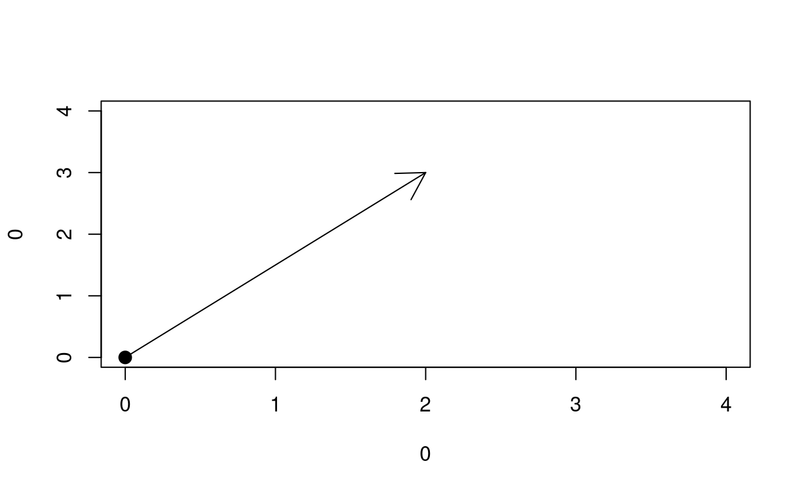
Now if we view the meaning of that arrow as a displacement then the natural idea of a direction (coupled with a distance) arises. This distinction between vector as position and vector as direction is important AND it is something that you have seen before with simple numbers. Let me give you an example:
10 degrees Celsius is 50 degress Fahrenheit (position)
BUT if I tell you that the temperature changed by 10 degrees Celsius, then by how many degrees did the temperature change in Fahrenheit? (displacement)? Answer: 18 degrees Fahrenheit. Not convinced?
10 degrees Celsius is 50 degrees Fahrenheit 0 degrees Celsius is 32 degrees Fahrenheit ——————————————- (10-0) degress Change in C is (50-32) degree change in F
The conversion formula has a graph that is a straigh line \[ \textrm{F} = \frac{9}{5}\textrm{C} + 32 \]
The change in \(\textrm{F}\):
\[ \begin{aligned} \textrm{F}_1 - \textrm{F}_2 &= \biggl(\frac{9}{5}\textrm{C}_1 + 32\biggr) - \biggl(\frac{9}{5}\textrm{C}_2 + 32\biggr)\\ &= \frac{9}{5} \biggl(\textrm{C}_1-\textrm{C}_2\biggr)-\biggl(32-32\biggr)\\ &= \frac{9}{5} \biggl(\textrm{C}_1-\textrm{C}_2\biggr)\\ \textrm{Change in F}&= \frac{9}{5} \biggl(\textrm{Change in C}\biggr) \end{aligned} \]
Notice that a 10 degrees change in \(\textrm{C}\) becomes \(\frac{9}{5}10= 18\) change in \(\textrm{F}\).
So the same number 10 (here we are thinking of it as a vector of length 1) can be a position (10 degrees \(\textrm{C}\)) or a displacment (change by 10 degress \(\textrm{C}\)). And the conversion rule that we need to use when we change from Celsius to Fahrenheit actually changes– a fact that underscores the differences between the two. Most of the time in this class we can just think of a vector as a list– a position in data-space… however we will also be looking at techniques similar to finding lines of best fit that involve us to “move”, step-by-step, through “parameter space”. These “steps” will be vectors thought of as displacements… so I want to talk about that just a little bit more.
The number 10 (as a position) is, in a sense absolute. The number 10 (as a displacment) only becomes a position when a starting point is specified. But “displacement” math still makes sense without knowing this:
- A displacment of 10 units to the right (+10)
- followed by a displace of 4 units to the left (-4)
Is a displacement of 10-4 = 6 units to the right.
Similarly a displacement of \((1,2)\) followed by a displacement of \((-3,4)\) is \((1,2) + (-3,4) = (1-3,2+4) = (-2,6)\)– namely a displacement of -2 units along \(x\) followed by a displacement of 6 units along \(y\).
All of this is probably sounding pretty pedantic, but the distinction is important. A displacement of \((1,2)\) at \((-3,4)\) produces a news position of \((-2,6)\). Again– \((-2,6)\) can be a position or a displacement– it all depends upon the context.
Why vectors?
If a vector is just an array… then why do we care about the mathematical idea of vectors?
This is where things get interesting. In mathematics your first interpretation of a vector is as a list of numbers… but it comes equipped with vector operations. These are things that take two vectors and produced a third. For example: Addition:
## [1] 9 22 25 47## [10, 20, 30, 40, -1, 2, -5, 7]DANGER: That did something else. That concatenated the two. If we want the arrays to behave like vectors in python we need to use the package numpy:
## array([ 9, 22, 25, 47])So what makes something a vector anyway?
The mathematical details
In the mathematical sense, a vector is more than just a list of numbers. There must be a way to add the vectors together and a way to scale a vector. The scaling is associated to a set of numbers called the scalars.
In this class we are typically dealing with real numbers so the vector is a list of real number and the scalars are also real numbers. Let’s see a simple example:
\[ \begin{aligned} A&=(2,3)\\ B&=(3,-1)\\ A+B &= (5,2)\\ -2B &= (-6,2) \end{aligned} \]
In the example above we added the vectors \(A\) and \(B\) and we scaled the vector \(B\) by the scaling factor \(-2\).
Mathematics is all about generalization. So the most abstract definition of vector can be quite hard to understand. When we use real numbers we get some properties “for free”. For example, in the real numbers, \(\mathbb{R}\), there is a special number called \(0\) with the unique property that it leaves values unchanged Under addition. For example, \(3.5 + 0 = 3.5\). This number is called the additive identity. For the real numbers there is a multiplicative identity called \(1\). For example, \(3.5*1 = 3.5\).
On the other hand, in the natural numbers, \(\mathbb{N}\), (if you are in the “no 0” camp) there is no additive identity.
Another thing that comes for free with the real numbers is an additive inverse. This is the unique number that can be added to another to get to the additive identity. For example, \(2+(-2) = 0\). The real number \(-2\) is the only real number you can add to \(2\) to get produce a \(0\). Similarly, \(2\) is the only real number that you can add to \(-2\) to produce a \(0\).
You need the following details:
- An ability to add
- An ability to scale (we call this scalar multiplication)
We will require a few more things too:
- An additive identity typically called 0, but do not be fooled by the symbol– when we talk about the zero-vector we know that the symbol \(0\) represents a list whose every entry is 0:
\[ 0 = (0,0,\cdots,0) \]
- An additive inverse for every vector– the unique element (list of numbers) that can be added to get back to 0.
I want to stress that this is where the idea of data types matters a great deal. The symbol \(0\) as a real number is the usual 0. On the other hand the symbol \(0\) as a vector is a list of \(0\)’s. To add insult to injury. The symbol \(0\) as an integer is NOT the same things as \(0\) as a real number, etc. EXCEPT: since there is a natural inclusion of the integers into the real numbers we usually bend the rules a bit and consider an integer 0 to be the same thing as a real number 0.
Most computer language perform an automatic type conversion. Under the hood, an integer 0 in R (which we can designate as 0L) is not the same bit configuration as a double 0. But when the two are compared using the == comparison the language automatically converts the the least restrictive data type. Notice:
## [1] "integer"## [1] "double"## [1] TRUEMore properties of vectors
We also need the following properties for vector addition:
- Vector addition needs to be commutative: \(A+B = B+A\)
- Vector addition needs to be associative: \((A+B)+C = A + (B+C)\)
We also require there to be a scalar addition AND scalar multiplication. The key thing is that these scalar operations must distribute with vector addition:
- a(A+B) = aA + aB
- (ab)A = a(bA)
- (a+b)A = aA + bA
Finally, I’ll remark that we are defining a vectora space using \(\mathbb{R}\) as the scalars. This is called a **vector space over \(\mathbb{R}\).
Not just any numeric system can fill the roll of being the scalars (for those who are interested, the scalars need to be a field, but if you don’t know what that means don’w worry about it), but we’ll ignore those details for now. Just notice that the following must also hold:
- 0A = 0
- 1A = A
data as vector
Consider a numeric, statistical variable. It would not be out of place to think of it as a column in a table of data. R’s data.frame (and tidyverse’s tibble) are data types designed to deal with this abstraction. Base Python does not have an equivalent to data.frame, but the Panda package does. Let’s see a few examples:
centered data
Consider a datavector \(X=(x_1, x_2, \ldots, x_n)\). We can calculate the real value \(\overline{X} = \frac{1}{n}\sum x_i\). We can embed the real value \(\overline{X}\) into the vector \(\overline{X} = (\overline{X}, \overline{X},\ldots,\overline{X})\) (I’m using the same symbol for both… so that’s a bit confusing… just notice that \(\overline{X}\) on the left-hand-side of \(=\) is a vector and the \(\overline{X}\)’s on the right-hand-side are real values) Then as vectors \(X-\overline{X}\) represents a new data-set in which the average value of \(X\) was subtracted from every one of the original entries.
This is called centering the data because the average of the new data set is 0. See for yourself:
\[ \begin{aligned} X &= (1,2,3)\\ \overline{X} &= \frac{1+2+3}{3}\\ &= 2\\ X - \overline{X} &= (1-2,2-2,3-2)\\ &=(-1,0,1) \end{aligned} \]
Clearly the average of the last expression is 0.
Matrices
A matrix is a multidimensional array. In some languages it is an array of arrays. In R, a matrix, is, under the hood, just an array with some meta data (called an attribute) that determines the dimension of an array.
Let’s look at an example:
## [,1] [,2] [,3] [,4] [,5]
## [1,] 1 3 5 7 9
## [2,] 2 4 6 8 10Notice that the variable mat is build from the sequence 1:10 Pay special attention to the ORDER of the original sequence and the order in the matrix.
(For the Computer Science students… this is called column major. Some languages use row major and some use col major)
A matrix, in R, can be accessed using the [row,col] expression:
## [1] 6Individual rows can be accessed by leaving out the “col” number. Similarly for columns:
## [1] 2 4 6 8 10## [1] 5 6The transpose of a matrix swaps the rows and columns:
## [,1] [,2]
## [1,] 1 2
## [2,] 3 4
## [3,] 5 6
## [4,] 7 8
## [5,] 9 10In Python we use nested lists and generator notation to access columns
## 9## [6.7, 8, 9, 10]## [3, 9]Read B.1 through B.2 from John Fox’s Appendex pdf.
Now, in R,
Create two 2x5 matrices and assign them the variable \(A1\) and \(A2\) respectively.
The sum of the entries in \(A1\) should be 5 and all the values should be different. The values in \(A2\) can be whatever you like, but they can’t all be 0
Similarly make a 5x2 \(B\) that is Not the tranpose of \(A1\) or \(A2\).
Make two column vectors (which are matrices with 1 column) of size 5x1. Call them \(v\) and \(w\)
Points:
- 1 point for each matrix
- 1 point for assigning the sum of \(A1\) and \(A2\) to
mat.sum - 1 point for assigning the difference of \(B1\) and \(B2\) to
mat.diff - 1 point for assigning \(-2A1\) to
mat.scaled - 1 point for assigning the transpose of \(A1\) to
mat.transpose - 1 point for assigning the matrix product \(A1B1\) to
mat.product - 1 point for assigning the value of \(A1v\) to
y - 1 point for calculating the dot product of \(v\) and \(w\)
You will find that R has a matrix multiplication operation %*%.
Now read B.1.3
Use the R function solve to find the inverse to mat. Assign it to the variable inv. Test that mat%*%inv = inv%*%mat is approximately \(I_4\). Note… that floating point arithemtic will ensure that desired inverse will not quite match \(I_4=\)diag(1,4). But it will be close (try rounding the product to 3 places and see what happens)
It is good practice to put any solve() funcion inside of try() because many matrices are singular (non-invertible).
###Programming challenge
This is an optional challenge (difficulty 5 math points 15 csci points)
Write R code to show each step in Gaussian elimination for a 3x3 matrix(reread B.1.3 ) BONUS(+5 csci points): Make your code work for an \(nxn\) matrix.
Lines of best fit
(Primarily review)
Consider a dataset comprised of two variables. We will consider one to the response variable and the other to be the explantory variable.
The closeness of the data to fitting on a straight line when displayed as a scatterplot is measured by the correlation coefficient which is symbolized by the letter \(r\). This is a statistic (meaning that it is a number calculated from a sample) and it estimates a parameter (meaning a number that describes the distribution from which the sample was drawn).
If we let \(x_i\) and \(y_i\) denote the \(x\) and \(y\) values for the \(i\)th observation in the data-set and we let \(n\) represent the number of obesrvations. Then we can define
\[ \begin{aligned} \overline{X}&=\frac{\sum_{i=1}^n x_i}{n}\\ \overline{Y}&=\frac{\sum_{i=1}^n y_i}{n}\\ s_x^2 &= \frac{\sum(x_i-\overline{X})^2}{n-1}\\ s_y^2 &= \frac{\sum(y_i-\overline{Y})^2}{n-1}\\ r &= \frac{1}{n-1}\large\sum\frac{(x_i-\overline{X})}{s_x}\frac{(y_i-\overline{Y})}{s_y}\\ b_1&=\frac{s_y}{s_x}r\\ b_0&=b_1*\overline{X} - \overline{Y} \end{aligned} \]
A few things to notice:
\[ \begin{aligned} \sum(x_i-\overline{X}) &= \sum x_i - \sum \overline{X} \\ &= n\overline{X} - n \overline{x} \\ &= 0 \end{aligned} \]
Also
\[ \begin{aligned} s_x^2 &= \frac{\left|X-\overline{X}\right|^2}{n-1}\ \textrm{where }\overline{X} \textrm{ is a constant vector and }X\textrm{ is the data vector}\\ r &= \frac{1}{n-1}\sum \frac{(x_i - \overline{X})}{s_x}\frac{(y_i - \overline{Y})}{s_y}\\ &= \frac{1}{n-1}\frac{\sqrt{n-1}}{\left|X-\overline{X}\right|}\frac{\sqrt{n-1}}{\left|Y-\overline{Y}\right|}\left((X-\overline{X})\cdot(Y-\overline{Y})\right)\\ &= \cos(\theta)\ \textrm{ where }\cos(\theta)\textrm{ is angle between } X -\overline{X} \textrm{ and } Y - \overline{Y}\\ \end{aligned} \]
So we can interpret \(r\) as the angle between the centered datavectors.
Why would we use \(\overline{X}\) to represent \((\overline{X},\overline{X},\ldots,\overline{X})\)
Just as we have a natural embedding of \(\mathbb{Z} \subset \mathbb{R}\) there is a natural way of embedding \(\mathbb{R}^n\) into the \(n \cross n\) matrices. In particular, we take the \(n\) elements in the vector and use them as the main diagonal. We could, of course use the vector as a column vector or a row vector, but doing it as the main diagonal has the following advantages:
- Addition remains componentwise
- Multiplication remains componentwise
Furthermore, the identity matrix is the matrix comprised of all 1’s on the diagonal. So there is a natural identification already of \(1 = (1,1,\ldots,1)\). And, in particular, We have a natural embedding of \(\mathbb{R} \subset \mathbb{R}^n \subset \textrm{Mat}_n(\mathbb{R})\) that retains all the properties of scalar multiplication as well as vector addition.
This is also consistent with the way that R treats expressions. Notice that the two expressions below have the same output:
## [1] -1 0 1## [1] -1 0 1More structure
For machine learning purposes we are going to need to be able to compare vectors– not just to decide if they are the same or different, but to be able to assess how different two vectors are from each other. There are two types of mathematical machinery that makes this possible. The first is a Norm. This is a function that assigns to every vector a length. To be consistent with our usual definition of length it must have a few properties (which I will detail below).
The second idea is a way to measure the distance between two vectors. In math speak this is a function that takes two vectors as input and generates a single non-negative real number as output. In the interests of generality the properties of this function (discussed below) are as “loose” as possible and this means that some distance functions can behave in unexpected ways… so be careful!
A norm is a better fit for vector spaces because (as you will see shortly) it must respect “scalar multiplication”. In other words, the norm of \(2X\) is twice the norm of \(X\). However, the properties of the distance function do not require that \(d(2X,2Y)=2d(X,Y)\).
For every norm there is a corresponding distance function does have the property that for every real \(\alpha\), \(d(\alpha x, \alpha y) = \left|\alpha\right| d(x,y)\). And for every distance function with this property there is a corresponding norm so you could, if you wanted, consider vector spaces with a norm to be equivalent to vector spaces with a distance function that respects scalar multiplication.
metric space
We will think of a metric space as a vector space (over \(\mathbb{R}\)) along with a concept of distance. In order for our idea of distance to make sense we’ll require the mathematical machinery (a function) to take two vectors as input and produce a real number as output… even more we will require that the output be non-negative. Let’s call this function \(d\) and require that it has the following properties:
- \(d(X,Y) \ge 0\)
- \(d(X,Y)=0 \textrm{ iff }X=Y\)
- \(d(X,Y) = d(Y,X)\)
- \(d(X,Y) + d(Y,Z) \le d(X,Z)\) (the triangle inequality)
A vector space with a function satisfying these conditions is known as a metric space.
We will encounter a large variety of metric spaces in data science and machine learning.
The usual way of determining distance (that you learned in high school and elementary school) is called the Euclidean Metric:
\[ d(X,Y) = \sqrt{(x_1 - y_1)^2 + (x_2 - y_2)^2 + \cdots + (x_n - y_n)^2} \]
Consider some constraints placed upon \(X\) and \(Y\) that restrict their possible values. Since the \(\sqrt{}\) function and the \(x^2\) functions are order preserving for non-negative values the extrema of \(d(X,Y)\) is the same as the extrema for \(d(x,y)^2\). Hence the linear regression “line of best fit” is very closely associated to this particular metric.
The norm
The norm is frequently symbolized with single (or double) vertical lines:
- \(\left|X \right|\)
- \(\left\| X \right\|\)
The norm must satisfy these properties:
- \(\left\|X\right\| \ge 0\) and \(\left\|X\right\| = 0 \Leftrightarrow X=0\) (vectors, except for 0, have positive length)
- \(\left\|X+Y\right\|\le \left\|X\right\| + \left\|Y\right\|\) (respect the triangle!)
- \(\left\|\alpha X\right| = \left|\alpha\right|\left\|X\right\|\) (respect scaling)
We can define a distance from the norm as follows: \[d(X,Y) = \left\|X-Y\right\|\]
It’s worth spending a bit of time to ensure that the distance axioms are satisfied… (but they are)
When the metric respects scaling then the following defines a valid norm:
\[\left\|X\right\| = d(X,0) \]
The original metric can, frequently, be regained from the norm But other metrics are possible:
For example:
\[ d(X,Y) = \sqrt[3]{(x_1 - y_1)^3 + (x_2 - y_2)^3 + \cdots + (x_n - y_n)^3} \]
Calculus
We are not going to need to master all of calculus for this course (although it’s not a bad idea if you want to understand the theory behind many of the technologies that we’ll be using). However, we are going to need to understand a few idea that came from calculus.
Let’s start by using this as an excuse to get a bit more practice with our R coding. We’ll be focusing on writing computer functions and using base R graphics. You might want to review the following:
- How to make a function in R
- The
curve()function in R
I’ll start R-ifying the following mathematical expression:
\[ f(x) = x^2 - 3x +2 \] Here’s how I could express this in R:
Notice that now I can use R to calculate the value of expressions like \(f(2)\) and \(f(-1)\):
## [1] 0## [1] 6I can also use curve() to easily graph the function from \(x=-1\) to \(x=3\):
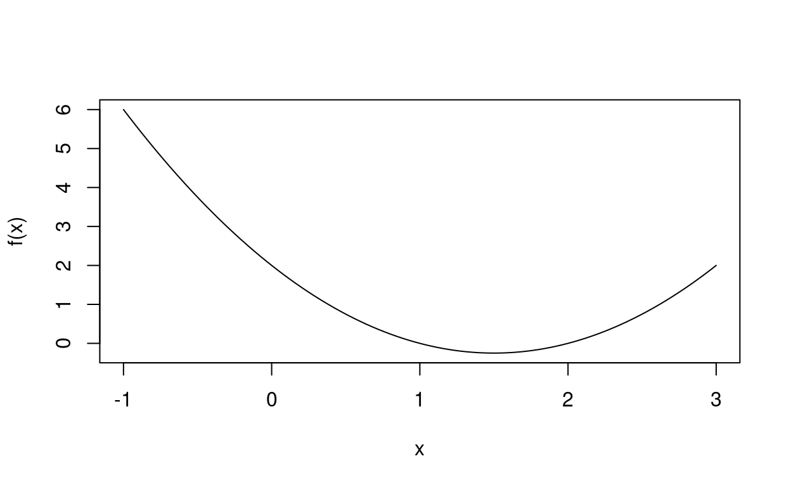
Recall, that in algebra you spent a great deal of time learning how to solve an equation like:
\[ f(x) = 0 \]
Graphically this is equivalent to plotting the following two functions and finding the x-values at which they cross:
\[ \begin{aligned} y &= x^2 - 3x + 2\\ y &= 0 \end{aligned} \]
Here is the graph: 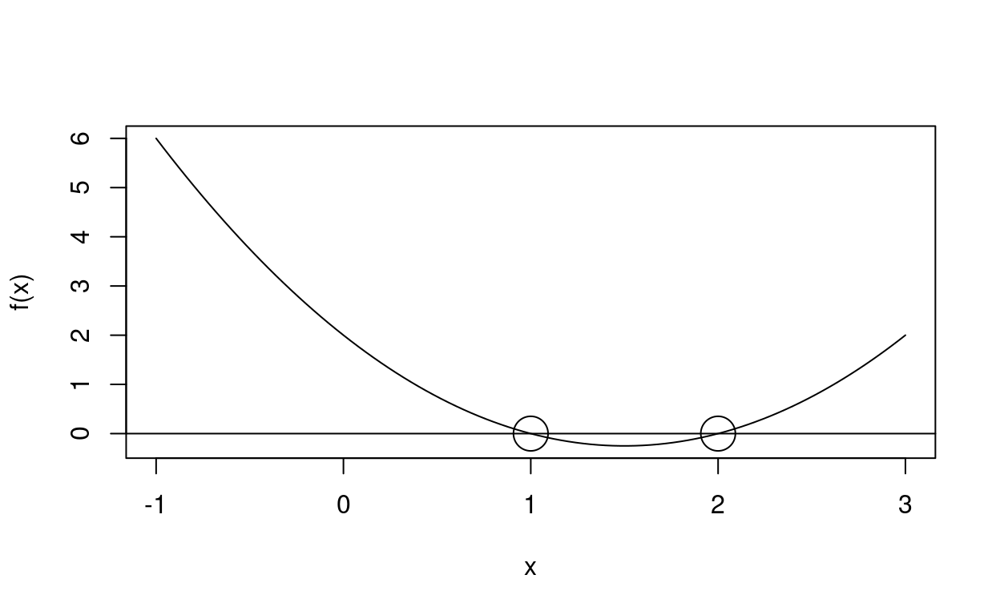
It certainly looks as if \(x=1\) and \(x=2\) are the solutions…. let’s check:
## [1] 0## [1] 0Yep… although we need to be careful. R certainly things that \(x=1.00000000000000000001\) is also a solution to the equation:
## [1] 0## [1] TRUERemember that any expression involving == and the comparison of two decimal expressions in R can be problematic. Try to remember (we discussed it in Intro to Data Science) why the following R expressions return the values that they do:
## [1] 0.3## [1] 0.3## [1] FALSEThe only way to be perfectly certain that you have an expression representing the exact answer is to use the techniques of mathematics… on the other hand… in most real-world situations being very close to the real answer is sufficient. In any event, in our situation, we can use a bit of algebra:
\[ \begin{aligned} 0 &= x^2 - 3x + 2\\ &=(x-2)(x-1) \end{aligned} \]
This is clearly satisfied (precisely) when \(x=1\) or \(x=2\).
Create a function that plots the graph of \(f(x) = 2x^2 - 3x + 1\) AND has a horizontal line at \(y=0\). (graph so that BOTH solutions appear)
Estimate the solutions from the graph. (Hint– one will be an integer and the other will be a rational number).
Numeric approximation
Now how would I go about trying to find a good-enough solution to the equation if I didn’t know the algebra?
First, we are not going to worry much about doing it efficiently. From the graph we can see that the solutions are definitely in the interval \([0,1.5]\). We might recall from algebra that a polynomial of degree \(n\) has, at most, \(n\)-real solutions… so since this polynomial is of degree 2, we know we’ve found all our solutions.
So… Let’s try every value between \(0.05\) and \(1.55\) spaced out by 0.1 (if we did it from 0 to 1.5 we would find the true values of the zeros immediately… but that’s not the purpose here)
Let’s look at our sample points graphically and then examine the y-values numerically:
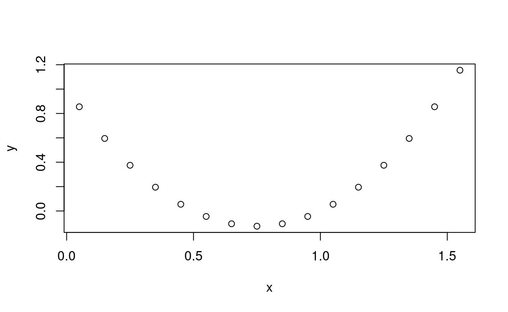
## [1] 0.855 0.595 0.375 0.195 0.055 -0.045 -0.105 -0.125 -0.105 -0.045
## [11] 0.055 0.195 0.375 0.595 0.855 1.155Look at the signs of the \(y\)-valeus. They change from positive to negative. Let’s make a quick table of these values. I will use rbind so that the table fits more comfortably in this RMarkdown document, but that has the disadvantage that ALL entries in a column must be of the same data-type– that will rpoduce a data.frame in which all the values are numeric and we’ll lose the integer property that one would expect in an index. For real work cbind() or data.frame() is a better choice.
Notice that at index 5 to index 6 the \(y\)-values change sign (this happens at \(x=0.45\) and \(x=0.550\)). A similar issue occurs between index 10 and index 11 (\(x=0.95\) and \(x=1.15\)) although this time we are transition between negative and positive.
If a function is well-behaved (some of you may be familiar with the term continuous) then we are guaranteed that the function does not “skip” values. In other words we know that between \(x=0.45\) and \(x=0.55\) the function takes on ALL possible values (at least once… possibly more than once) of \(f(0.45)=0.055\) and \(f(0.550) = -0.045\). In particular we know there must be some \(x \in [0.45,0.55]\) such that \(f(x) = 0\). That means we have an upper and lower bound on at least one solution.
## [,1] [,2] [,3] [,4] [,5] [,6] [,7] [,8] [,9] [,10]
## index 1.000 2.000 3.000 4.000 5.000 6.000 7.000 8.000 9.000 10.000
## x 0.050 0.150 0.250 0.350 0.450 0.550 0.650 0.750 0.850 0.950
## y 0.855 0.595 0.375 0.195 0.055 -0.045 -0.105 -0.125 -0.105 -0.045
## [,11] [,12] [,13] [,14] [,15] [,16]
## index 11.000 12.000 13.000 14.000 15.000 16.000
## x 1.050 1.150 1.250 1.350 1.450 1.550
## y 0.055 0.195 0.375 0.595 0.855 1.155So we know that there is one solution between \(x=0.45\) and \(x=0.55\) and another between \(x=0.95\) and \(x=1.15\). So this gives us one algorithm for finding solutions:
Pick a lower limit for \(x\), pick an upper limit for \(x\). Calculate all \(y\) values for a sequence of \(x\) values between these limits and look for changes in sign. For every change in sign, repeat the process with the more precise lower limits and the more precise upper limits and a sequence of \(x\) values that are closer together. Repeat until the desired level of accuracy is achieved. Notice that the key to making htis work is that the evaluated value of one limit is negative and the other is positive.
One approach I could take is to apply the function to a sequence, find the number that is closest to zero and then look on either side to see if there is a sign change… any result that is 0 would end the process immediately.
I will use the fact that R can pass functions just like any other argument:
Now it’s your turn to write a function. Call it find.zero(). Use a while() loop and the approximate.zero() function that we just wrote to find a zero to the desired level of accuracy. If there are no sign change in the initial probe then return an NA.
I want to stress that this is a terrible way to find the zeros. Here are a few reasons why:
- We are calculating the value of our function for lots of unnecessary values.
- We are making a sequence of x values independent of the behavior of the function
More sophisticated approaches can be produced based around techniques you’ll see (or have seen) in Calc II such as Newton’s method. Without going into any technical details the idea in Newton’s method is to make a guess for the zero… then use the rate of change of the function near that guess to make a better guess.
Let’s put that idea aside– I want to continue using this simple example to provide some background for other important ideas.
First off… our approach to approximating the zero is a grid based approach. You’re probably used to thinking of a grid as being a two-dimensional thing like this:
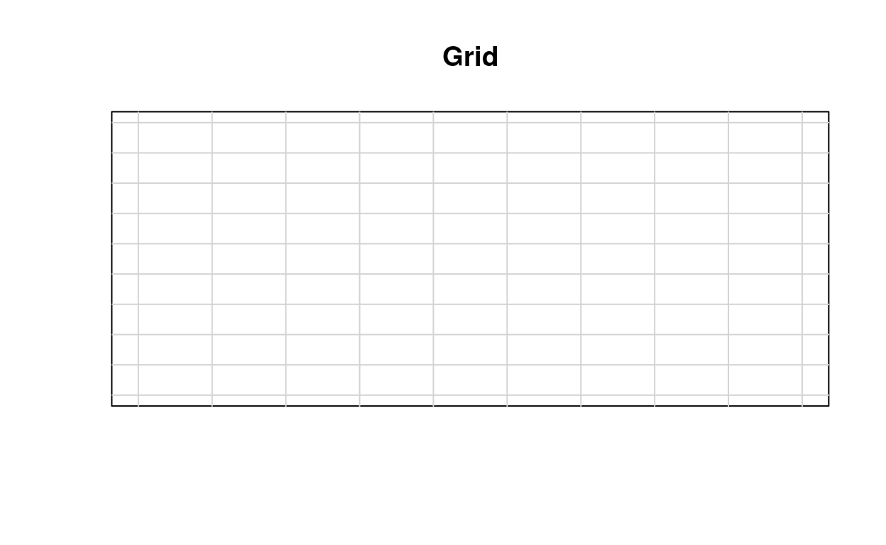
But what we did was the one-dimensional equivalent.. namely we found a set of equally spaced \(x\)-values, starting at \(\textrm{lower}\) and proceeding to \(\textrm{upper}\):
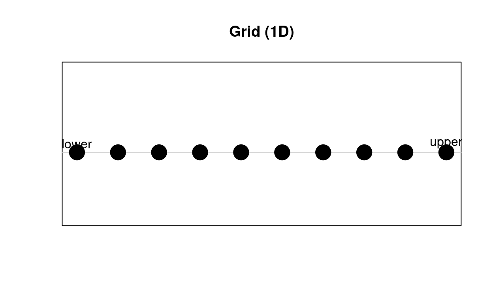
What we did was, in essence, sampling. We choose sample locations, applied the function and then looked to see what we found. Rembmer our earlier function \(f(x) = x^2 - 3x + 2\):
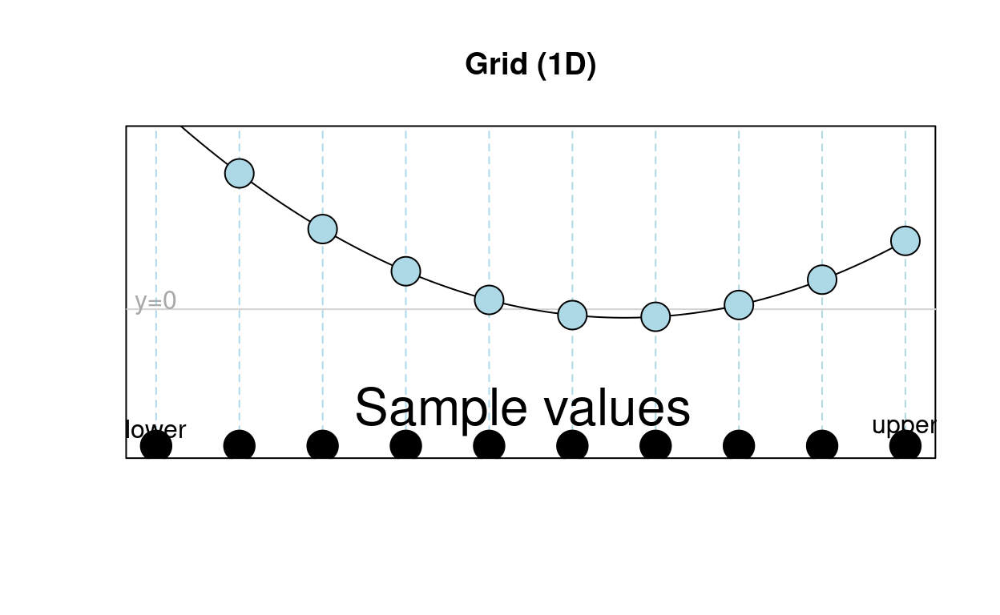
The dark circles along the bottom represent the \(x\)-values for which we calculated the function. The light blue circles on the graph are the corresponding \((x,y)\) pairs. We’re looking for the zeros of the function… so we want \(x\)-values who’se corresponding point on the graph intersects \(y=0\). I purposefully left off the numeric values of the 10 \(x\)-values used in this example.
But notice that we are using a grid to probe the value of the function at equally spaced inputs (the corresponding outputs) are, in general NOT equally spaced.
So our basic approach to approximating the zeros was
\[ \begin{aligned} \textrm{Determine sample locations} &\rightarrow \textrm{Evaluate Function}\\ &\rightarrow \textrm{Determine new sample locations} \end{aligned} \]
\[ \textrm{Repeat until desired conditions are satisfied} \]
This is an iterative approach. We don’t necessarily know in advance how many times we will need to repeat.
Efficiency considerations aside, this is exactly what computers are good at doing.
Let’s consider a similar, but somehwat different problem– namely finding the value at which our function achieves a minimum. We will apply the same basic idea as before, but this time, instead of looking for places where the sign is changing we want to identify places where the function is increasing and decreasing. We could find the average rate of change between two sample points as follows: \[ \textrm{avg change} = \frac{f(\textrm{right}) - f(\textrm{left})}{\textrm{right}-\textrm{left}} \] Now I am going to do something a bit tricky. I’m going to make a function factory. THe idea is that you pass the function factory some information and it creates a new function baed on that information. So my function generator will take a function \(f\) and a distance \(h\) and make the following new function:
\[ f'(x) = \frac{f(x+h)-f(x)}{h} \]
Let’s call this the delta of \(f\) with an increment of \(h\).
Play with this idea and build a function called f that calculates \(f(x)=x^2 - 3\). Then find the delta of \(f\) with \(h=0.01\)
plot \(f\) and \(h\) on the same graph. Be sure to add light gray lines at \(x=0\) and \(y=0\). How are the graphs of \(f(x)\) and \(h(x)\) related to each other?

There is no clear relationship between of the 0’s of \(f(x)\) and \(h(x)\), however… the 0’s of \(h(x)\) (there’s only 1), do seem to tell us something important about the graph of \(f(x)\). Let’s color code the graph of \(h(x)\) and the graph of \(f(x)\). Let’s make the graphs “blue” when it is below the line \(y=0\) and make it “red” when it is above \(y=0\). We’re not going to completely automate this process. But let’s think about strategies.
Strategy one: Use algebra to find the zeros of the functions, determine the signs of the function over various inputs… draw the curve piece-wise
Strategy two: Calculate a dense sequence of \(x\)-values, find the corresponding \(y\)-values for the various functions and plot… we’ll do that.
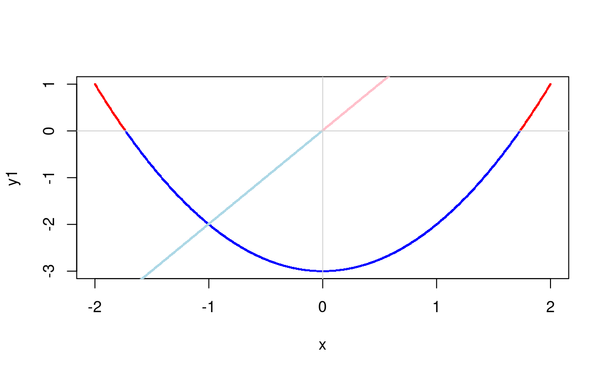
The key thing that you are seeing is that the graph of \(h(x)\) tells us how \(f(x)\) is changing:
- \(h(x) > 0 \Rightarrow f(x) \textrm{ increasing}\)
- \(h(x) < 0 \Rightarrow f(x) \textrm{ decreasing}\)
- \(h(x) = 0 \Rightarrow f(x) \textrm{ contstant}\) (for a moment)
So how does the magnitude of \(h(x)\) relate to the change in \(f(x)\)? First let’s recall that our \(h(x)\) is, basically recording the rate of change of \(f(x)\)…. it’s an estimate, but because used a small value for the increment it will be pretty close to the real thing. The interesting thing is that the rate of change has a nice graphical interpretation…. so… let’s pick an \(x\) value. I’m going to use \(x=-0.2\).
As you play with the slider below, notice that the x-values are changing– this is because I wrote the app to zoom-in on the point of interest. (I’ll explain more about what you’re seeing a bit later):
As you move the x-value you’re changing the location that you’re looking at the function. Notice that the average rate of change for a given increment (we’ll call it \(h\) again… don’t confuse that with the function \(h(x)\)) is changing:
\[ \begin{aligned} \textrm{Average Rate of Change} &= \frac{f(x+h) - f(x)}{(x+h)-x}\\ &=\frac{f(x+h) - f(x)}{h}\\ \end{aligned} \]
In other words the value of \(h(x)\) is the change in y over the change in x. This is also known as the slope of a line.
You can see that as the increment gets smaller and smaller we’re zooming in more and more on the graph. Notice that the zoomed in graph looks increasingly like a straight line. The slope of that straight line is the instantaneous rate of change. It’s also known as the derivative.
So to recap.
- We use R to write a computer function that calculates a mathematical function \(f(x)\)
- The R function
approximate.change()is a function factory that makes a new function \(h(x)\) that finds the average rate of change for an increment \(h\). - As the increment gets smaller and smaller, the average rate of change looks more like the instantaneous rate of change.
- Zooming in on the graph near the point \((x,f(x))\) will make the graph look increasingly like a straight line… the slope of that straight line is also the instantaneous rate of change
- Zooming in on the graph and choosing a small increment for generating \(h(x)\) are closely related to each other.
- The choice of \(x\)-value influences how “zoomed in” we need to be for the true graph to look like a straight line.
Now let’s introduce vocabulary.
For a “good” function \(f(x)\) the derivative of that function is the instantaneous rate of change for \(f(x)\). We denote this new functions as \(f'(x)\). Our approximate change function will be very close to the true value of \(f'(x)\) for small increments…. how close we need to get will depend upon the value of \(x\) for which we want the rate of change.
In calculus you learn how to find \(f'(x)\) exactly (in many situations). For example if \(f(x) = x^2 + 3\) then \(f'(x) = 2x\). The advantage of our approximation approach is that we only need to encode the mathematical function \(f(x)\) in an R function… and then experiment with various increments until our approximate derivative gets close enough to the true answer. How do we know we are close enough? We keep making the increment closer to 0 and check the value near \(x\). When the approximation doesn’t change much… we’re probably close enough.
WARNING: The techniques we’re developing here are horribly inefficient… they are for the purposes of pedagogy… Not for efficiently performing these calculations.
Finding the minimum
Let’s suppose that instead of finding the zero of a function we’re more interested in finding the minimum. We have a couple of options we can take
- We could calculate the derivative and find the zeros for it
- We could try something a bit different
We’re going to go for the second one. This time, we’ll proceed as follows:
- Take a guess (call this guess \(x\))
- Calculate the derivative (rate of change) for the function at \(x\)
- Use the derivative (rate of change) to adjust our guess
It’s the last step that has all the magic. Notice that the closer we are to a minimum the lower the magnitude of the rate of change– at the minimum itself the rate of change is 0 (in our example).
The \(x\)-axis comes with a natural sense of direction which we encode in a number line– lesser numbers are on the left and greater numbers are on the right. If the rate of change is negative the function is decreasing… and, if we’re hunting for a minimum, then we should increase the value of \(x\) that we’re checking, on the other hand if the value of the function is increasing then we should decrease \(x\)… since the desired minimum is to the left.
We will use the magnitude of the derivative to determine how far to move… since the sign is exactly backwards… let’s try this:
\[ \textrm{step at }x = -\frac{f'(x)}{10} \] That 1/10 is just something to try:
That took 28 iterations to get us to with \(x\pm0.01\) of the desired value of \(x\). Note that if our step size was too large we could easily step over the minima and bounce back and forth between the two sides– getting increasingly farther away from our true goal. We could even encounter situations where we bounce back and forth between two values of \(x\).
I want to stress, one more time, that I’m providing inefficient examples for the purposes of increasing understanding…
Play around with these ideas a bit and see what you can find. Notice that I put an upper limit of 50 on the number of attempts the iter() function will employ when seeking a minimum– so you shouldn’t run into any infinite loops.
Also notice that if you were hunting for maximums you would need to use the opposite sign convention when updating your \(x\)-guesses.
Adding another dimension
Now let’s think about a situation involving 2 input variables and 1 output variable. Or, in the language of statistics, 2 explanatory variables and 1 response variable.
Let’s start by considering a function that is related to statistics– the two dimensional equivalent of the bell-curve.
We will use the library mvtnorm. You may recall that continuous distributions have a density function that can be used to calculate probabilities for various events (review your introductory statistics material). The density function, in this case, takes two inputs and produces a single numeric output. The location of the graph is controlled by two parameters called the means (which are not included in this example because the graph really does look the same). There are two standard deviations one for each of the two inputs. Increasing the standard deviation for a variable increases the spread of the distribution (in that direction) and there is a corresponding widening of the bump in that direction.
The correlation, as you may recall, is a measure of how much knowledge about one variable’s value provides about the other. As this value gets closer to -1 (negative linear association) and +1 (positive linear association), the more concentrated the graph becomes. A correlation of 0 means that the two variable are completely independent.
The following Shiny applet will generate the graph of this distribution under various conditions
Question: If knowledge of \(X_1\) provides no information about \(X_2\) then why do cross-sections for fixed values of \(X_1\) have different heights?
Answer: Do not confuse joint probability with conditional probability. The cross-section needs to be re-scaled to have an area of 1 again:
\[ P(X_2=a|X_1 = b) = \frac{P(X_1 =b \textrm{ and } X_2 = a)}{P(X_1 = b)} \]
The special properties of the normal distribution ensure that that the re-scaled graphs all have the same shape!
Climbing that hill
We can apply a similar strategy towards finding a maximum or a minimum for this function, as we did earlier. but now we are faced with a more difficult challenge. The step (or increment) that we need must take into consideration TWO dimensions. We could go back to our grid-based approach (this time in 2D). To be more precise we could find an equally spaced collection of input variables– evaluate our function at all neighborhood points– pick the largest– and then for all four of the “square neighborhoods”, produce a finer grid and repeat the process… but this seems inefficient.
It would be nice to be able to somehow follow the slope (like we did in the 1D case). But what does that mean? In a graph like this there is not a 1-dimensional line that looks like the graph.. instead if you zoom in very closely the graph begins to look like a plane. To describe such a plane we have to describe two tilts: One for X and one for Y:
Consider that multinormal distribution whose graph you explored earlier. Let’s consider it to be the graph of \(z=f(x,y)\)…. pick a point and imagine zooming closer and closer to that location… as you zoom in closer and closer to some fixed point \((x,y,f(x,y))\), the graph will increasingly look like the type of plane that you were manipulating in the last app. Both the \(x\)-tilt and the \(y\)-tilt will depend upon the function \(f(x,y)\) and the input \((x,y)\) chosen. We call \(x\)-tilt the partial derivative with respect to \(x\) and the \(y\)-tilt is the partial derivative with respect to \(y\). The first represents the rate of change at \((x,y)\) when one changes \(x\). The second represents the rate of change at \((x,y)\) when one changes \(y\). These can be symbolized as \(\partial_x\) and \(\partial_y\) (you’ll see slightly different notation in your math class… but I want to keep this simple so I’m choosing to use this convention.)
\[ \begin{aligned} \textrm{Approximate change in f(x,y) for changing }x &= \frac{f(x+h,y)-f(x,y)}{\textrm{Distance between }(x+h,y)\textrm{ and }(x,y)}\\ &= \frac{f(x+h,y)-f(x,y)}{h}\\ \textrm{Approximate change in f(x,y) for changing }y &= \frac{f(x,y+h)-f(x,y)}{\textrm{Distance between }(x,y+h)\textrm{ and }(x,y)}\\ &= \frac{f(x,y+h)-f(x,y)}{h} \end{aligned} \] We can actually find a similar average rate of change along any vector \((a,b)\):
\[ \begin{aligned} \textrm{Approximate change in f(x,y) along }(a,b) &= \frac{f(x+a,y+b)-f(x,y)}{\textrm{Distance between }(x+a,y+b)\textrm{ and }(x,y)} \end{aligned} \] We could come up with explicit formulas… but that’s something you’ll do in calculus… I just want to get the idea across. As the vector \((a,b)\) is increasingly close to \((0,0)\) We get closer to an instantaneous rate of change in the direction \((a,b)\).
This is known as the directional derivative. There are all sorts of interesting and important details that I’m sweeping under the rug, so if anything seems weird to you (I can think of a couple of things that I’m purposefully not discussing right now that might distrurb you), then please ask me about it in person.
But for now… imagine that you pick a direction (that we will describe as \((a,b)\)) and find the approximate rate of change along \((a,b)\) now consider scaling \((a,b)\) closer and closer to 0… this will get us arbitrarily close to the rate of change in the direction \((a,b)\) (again… this is the directional derivative in the direction \((a,b)\)).
Now, if we are seeking the top of the hill… what we really want is the direction that travel from \((x,y)\). Rather surprisingly that direction lines up with \((a,b) = (\partial_x,\partial_y)\). This expression has another name too… it’s called the gradient.
So when you hear about the gradient descent technique… then you know that this idea is being used to find a minimum. We calculate (exactly or approximately), the gradient for a function at a specific input point. This provides us a direction the direction of steepest increase (the negative of this vector is the direction of steepest decrease), we use these values to decide the direction of our step and we take an appropriate scaled hop in that direction and check again… we continue until our directional vector is appropriate close to \((0,0)\). The advantage of this technique is that it applies equally well no matter HOW MANY input variables we’re using.
Important NOTE: multilpying a function by -1 turns maximums into minimums and vice versa… so if you can find local minimums you can find local maximums and vice-versa.
Parameter Space
We have already seen an example of a parameterized distribution. (The multivariate normal distribution example you played with earlier).
Let’s go back to the line of best fit that we all know and love from linear regression. A line is a parameterized model with two parameters:
- Intercept
- Slope
If didn’t already have the formula, we could apply these techniques to get pretty close to the line of best fit. Our function that we wish to minimize would be the sum of squares of the residuals. So we need our observations first, and then we could calculate the sum of squares of the errors… In other words: Two variables as input, one as output… Just exactly the sort of thing we’ve already been doing. Let’s give it a try with some random data… first, here’s the point cloud:
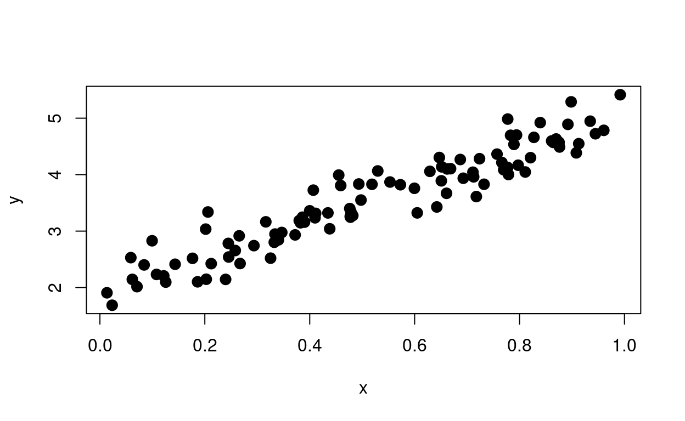
I will invert the residuals function to make the minima (now a maxima) a bit easier to see (inverting it makes the minima a maxima… so look for the peak). Note– the slope is too gradual near the peak to be able to see easily, so I added the “exponentiate” option which will make the peak substantially easier to locate (but you might enjoy turning it off).
I’m also including a countour map. It shows the same basic information as the perspective plot but it does so in 2D– the lines on a contour map indicate level sets– These are places that all have the same “height”" (aka have the same output). Exponentiation will control where the algorithm places the level sets… just play with it a bit… you’ll get the idea.
Warning: The red dot representing the sum of squares for your choice of slope and intercept (in the left graph) is graphed AFTER the surfaced plot– this means it will always be visible– even if it should be hidden by the surface– this can make the behavior of the redpoint look a bit… odd.
The nice thing about a contour map is that whether you’re looking for a maximum or a minimum the view will be the same.
We used the sum of squares of the residuals in the last example– this ends up making a line that does a good job of saying where the “mean” of \(y\) should be for a given \(x\). This approach does not really depend upon the distribution of the response variable, but it’s usefulness– as measured by being a good description of central tendencies, or as being able to make reasonable observations about the relationship between the explantory variables and the response variable may be compromised. Two of the first things you should check after building a linear model are
- That the residuals are normally distributed
- That the variables are homooscedastic
If the latter case is violated (which means that variance in \(y\) depends upon the specific values of the explanatory variables), then we have two common approaches
- Transform the response (or the explanatory variables) until the data is homoscedastic
- Use a more sophisticated regression technique like Generalalized Linear Models.
We’ll discuss both of those a bit. The first might be as simple as taking the log of the response values or raising it some variance stabilizing power (like a square root) before attempting regression. Interpreting the details of the model after such transformations can be challenging, but in many cases this is both easy and straighforward.
Using a different measure of fit
However… it is possible for us to use different measures of fit. One example would be
\[ \sum \left|y_i - \widehat{y_i}\right| \] Here, instead of the sum of squares of the residuals, we are finding the sum of the absolute values of the residuals:
As before I have inverted the surface… you truly want the “lowest point”, but it’s easier to see what’s happening if we make this behave like we are seeking the highest point– the contour plot would looke identical– only the numbers labeling the contours would change sign– but the curves would remain the same. Interestingly, this measure produces a result that predicts the median of the \(y\) values rather than the mean.
You’ll notice in this case that the surface showing the measure of best fit is a bit more peaked when non exponentiated– but the line ends up being pretty much identical– this is because the error distribution is symmetric so the mean and median are the same.
Let’s look at a different set of points where the distribution for each \(y\)-value is not normal, but is instead a skewed distribution:
The usual lineof best fit is in blue, the fit to the model using this modified approach is, as usual, in red. The absolute value-of-the-residuals-approach is more robust– it is resistant to outliers.
##Mathematical aside Consider a set of numbers– what value has the property that it minimizes the sum of square of the distances? How would we even go about figuring that out? Well… first we find an equation that captures that value:
\[ \sum (x_i-x)^2 \]
If we take the derivative with respect to \(x\) we get \(\sum -2(x_i-x)=-2\sum (x_i-x)\). If we want to minimize this value we need the derivative to be 0:
\[ \begin{aligned} 0 &=-2\sum( x_i - x) \\ &= \sum(x_i - x)\\ &= \sum(x_i) - nx\\ nx &= \sum(x_i)\\ x &= \frac{\sum x_i}{n}\\ &=\overline{x} \end{aligned} \]
Similarly for \(\sum \left|x_i-x\right|\). Let’s start by assuming that whatever the desired value for \(x\) happens to be, it is not the same as any of the \(x_i\)… if it WERE then we could remove those \(x_i\) without changing the sum… since the difference \(x-x_i\) would be 0 for those values. Thus the derivative is either +1 or -1 depending upon whether \(x\) is above or below \(x_i\). Setting this to zero and separating the two parts out: Let \(i\) denote the number of terms larger than \(x\) and \(j\) the number lower than \(x\): \[ \begin{aligned} 0&=\frac{d}{dx}\sum \left|x_k - x\right|\\ &= -\biggl(\sum_{\textrm{terms greater than x}}(-1)\biggr) + \sum_{\textrm{terms less than x}}(1)\\ &=j-i\\ i&=j \end{aligned} \] Note that as \(X\) changes the terms that take part in the LHS and in the RHS change and the function itself is only piecewise differentiable… but as long as \(x\) is not any of the data points we’re safe and the equation holds. So we achieve a minimum when \(i\)=\(j\)… which means that the number of terms greater than \(x\) is the same as the number less than \(x\). In fact… \(x\) is not unique (which is one reason why we like the sum of squares– it is guaranteed to have a unique solution). If the number of observations is odd… then, of course, we need to make \(x\) equal that middle observation… so then \(i=j\) again and the solution IS unique.
Let’s think about this some more: Let’s move \(x\) by the tiny amount \(\delta x\). Suppose that there are \(i\) observations below \(x\) and \(j\) above. If \(\delta x\) is negative then \(x\) gets closer to those \(i\) observations– and so the overall sum diminishes by \(\delta x)\) for every one… hence a change of \((\Delta x)i\) (recall that in this circumstance \(\delta x\) is negative). Similarly, \(x\) will move farther away from those observations… for a total change of \(-(\Delta x)j\). The overall change will then be \(\Delta x(i-j)\). Of course, when \(i=j\) there is no change.
Write a function that takes two arguments:
- \(x\) which is the same \(x\) as up above
- \(dat\) which is a vector of the data values \((x_1, x_2, \ldots, x_n)\)
call the function .f.

ridge regression
We have looked at 2 cost functions:
- \(\sum \textrm{residuals}^2\)
- \(\sum \left|\textrm{residuals}\right|\)
Another interesting approach tries to balance the accuracy with a restriction on the **parameters*
\[ \sum \textrm{residuals}^2 + \lambda \sum \textrm{parameter values}^2 \] The real value \(\lambda\) is a hyper parameter. When \(\lambda=0\) we have the usual OLS (ordinary least sum of squares). Otherwise the sum of squares of the parameters influences the result.
This is called ridge regresssion
Exponential Family
An extremely general family of distributions… so general in fact that it is hard to get a good sense out of what can (or can’t) be done with the curve is the exponential family.
In order to do more sophisticated forms of regression we want to understand this family better. In order to do normal linear regression we want:
- The error to be normally distributed
- with a mean of 0
- with a variance that is independent of the fitted value
You may recall that the latter condition is known as homoscedasticity
We will explore the two-parameter family of exponential functions… but that’s misleading because we almost always pick three functions to shape the curve. Different choices for these curves correspond to different distributions. So let’s build up this expression piece by simple piece:
A Line:
\[y = mx + b\]
Which we would be more apt to write as
\[f(x) = mx + b\]
Here \(m\) is the slope and \(b\) is the intercept– these constants and their interpretions should be well-under stood to you.
Complication one: We will be describing the distriubtion of the response variable, so we should use \(y\):
\[ f(y) = my + b \]
We are going to call use a different symbol to represent \(m\)… namely \(\theta\):
\[ f(y) = \theta y + b \]
Complication Two:
We want to understand the distribution for \(y\) given values for the explanatory variables, but we are NOT including them in our equation… all way have is \(m\) and \(b\).
To make this work, mathematically we would like to (at least for now) consider situations where \(b\) depends upon \(m\). We are going change our notation and call \(m\) by the new symbol \(\theta\). We are also going to make the dependence of \(b\) upon \(m\) (now \(\theta\)) explicit… FURTHERMORE we will use notation from conditional probability and (for technical reasons) we will use \(-\) instead of \(+\) for the intercept:
\[ f(y| \theta) = \theta y - b(\theta) \] So now we have a family of lines… pick a different value of \(\theta\) (The slope) and we change the line under consideration… however we now need a function called \(b(\theta)\) to determine the intercept.
We don’t explicitly include the dependence \(f(y|\theta, \textrm{function }b)\).
The choice of function for \(b()\) and the value of \(\theta\) will end up determining the expected value of \(y\) (when we are done) building the distribution.
Even after we add all the other features to this model the expected value of \(y\) (for a given value of \(\theta\)) will be
\[ \mathbb{E}(y)=b'(\theta) \] You don’t need to memorize this formula or anything… just know that the choice of \(b()\) is determining where the center of the data will be.
We are also going to want to be able to control the scale (aka the variance) of \(y\). So we will add a new scaling parameter \(\phi\) to our model (\(\phi\) is known as the dispersion parameter):
\[ f(y|\theta,\phi) = \frac{\theta y - b(\theta)}{a(\phi)} \] Once \(\phi\) is chosen this does nothing more (and nothing less) then verticall expand or shrink the graph of the line… the result is still a line.
Next we are going to exponentiate the right-hand side. This turns the curve into an exponential growth or exponential decay function:
\[ f(y|\theta,\phi) = \exp\biggl(\frac{\theta y - b(\theta)}{a(\phi)}\biggr) \] The problem is that this is not particularly useful. For one thing it won’t even be a distribution since the area under the curve won’t be 1.
We add one more function to the interior that depends upon \(y\) and \(\phi\):
\[ f(y|\theta,\phi) = \exp\biggl(\frac{\theta y - b(\theta)}{a(\phi)}+c(y,\phi)\biggr) \]
It’s that final function \(c()\), that determines the actual shape of the distribution… and it is this term that ensures that the total area under the curve is 0.
Our final function \(c\) will depend upon both \(y\) and \(\phi\). It can, in principle be any function… Think of it as a transformation of the line:
\[
f(y|\theta,\phi) = \frac{\theta y - b(\theta)}{a(\phi)}
\]
Before I go any further I need to draw your attention to a few details. First, as-written, the value of the density function \(f\) will depend directly upon both \(b()\) AND \(c()\) so how can I say that the expected value of \(y\) for a given \(x\) will on depend upon \(b()\) (namely \(\mathbb{E}(y)=b'(\theta)\)). This is because there is a hidden connection between our data and the values of \(\theta\) and \(\phi\). We are looking for the distribution of best fit. It’s the value of \(\theta\) and \(\phi\) that are most consistent with the data. Just like that peak you saw when we looked sum of square of the residuals for various values of \(m\) and \(b\). This is called the $maximum likelihood estimate** or MLE of the parameters. For this TERRIBLY complicated equation… the mean of \(y\) will occur precisely at \(b'(\theta)\).
In any event… let’s do some graphing:
Notice that for the default values given we have a curve that is, up to a constant multiple, the normal curve with mean \(\theta\) and variance one. Change:
\[ \begin{aligned} a(\phi)&=\textrm{phi^2}\\ b(\theta)&=\textrm{theta^2/2}\\ c(y,\theta) &= \textrm{-y^2/2/phi^2} \end{aligned} \]
That is, essentially, the normal distribution with mean \(\theta\) and variance \(\phi\). It’s not actually a density curve since the area under the curve is different from 1… but a few minor changes to the functions \(a(\phi), b(\theta),\) and \(c(y,\phi)\) would fix that issue.
Before proceeding, et’s consider what our ultimate goal actually is:
Given a point cloud associated to data– we’d like to be able to create a model that can be used to make reasonable predictions about the where the center of the reponse values should be. This value should depend upon the explanatory variables. It would be even better if we had a decent description for the response variable values associated to a given set of explanatory values. At a bare minimum we should be able to tell whether or not the mean and variance of those values is consistent with our model. In a better circumstance we’d like to be able to make confidence intervals.
Consider a situation where the y-values are Bernoulli (recall that this mean they are either 1 (with probability \(\pi\)) or 0 (with probability \(1-\pi\))). The expected value for a random variable with this distribution is \(\pi\). But what does that mean? If the probability of success was 1, then all the \(y\) values would be 1 and the average would be 1. Similarly for 0. If the probability, \(\pi\) is somewhere in between then the mean is between 0 and 1– it’s really a measure of the proportion of successes.
A Bernoulli distribution (yes/no as 0 or 1) is a special case of a binomial distribution. Consider a response variable \(y\) and suppose thta we have \(n\) observations of \(y\), all for the same set of explanatory variable values. Each observation is, itself, Bernoulli, but the entire set of observations for that combination of \(X\)-values is binomial: Different combinations of \(X\)-values might have differing numbers of observations, so let’s put all the observations on similar footing by letting \(Y\) represent the Proportion of observations that are 1 vs the proportion that are 0. So the count is \(B(n,\pi)\) where \(\pi\) represent the proportion being estimated by y. Therefore the distribution of y is defiend by:
\[ f(y|\pi,n) = {n\choose ny} \pi^{ny}(1-\pi)^{n-ny} \]
Note that \(ny\) is the count, and \(y\) can only really take on the values \(\frac{0}{n},\frac{1}{n},\frac{2}{n}, \cdots, \frac{n}{n}\) Surprisingly we can do some rewriting:
\[ \begin{aligned} f(y|\pi,n) &= {n\choose ny} \pi^{ny}(1-\pi)^{n-ny}\\ &=\exp(\ln({n\choose ny} \pi^{ny}(1-\pi)^{n-ny}))\\ &=\exp(\ln({n\choose ny})+\ln(\pi^{ny})+\ln((1-\pi)^{n-ny}))\\ &=\exp(\ln({n\choose ny})+(ny)\ln(\pi)+(n-ny)\ln((1-\pi)))\\ &=\exp(\ln({n\choose ny})+(ny)\ln(\pi)+(n)\ln((1-\pi)-(ny)\ln((1-\pi)))\\ &=\exp(\ln({n\choose ny})+(ny)(\ln(\pi)-\ln((1-\pi))+(n)\ln((1-\pi)))\\ &=\exp(\ln({n\choose ny})+(ny)(\ln(\frac{\pi}{1-\pi})+n\ln((1-\pi)))\\ &=\exp\biggl((ny)\ln(\frac{\pi}{1-\pi})+n\ln(1-\pi)+\ln\bigl({n\choose ny}\bigr)\biggr)\\ &=\exp\biggl(\frac{y\ln(\frac{\pi}{1-\pi})+\ln(1-\pi)}{1/n}+\ln\bigl({n\choose ny}\bigr)\biggr)\\ \theta &= \ln\biggl(\frac{\pi}{1-\pi}\biggr)\\ e^\theta&=\frac{\pi}{1-\pi}\\ e^\theta + 1 &= \frac{1}{1-\pi}\\ \ln\bigl(e^\theta + 1 \bigr)&= -\ln(1-\pi)\\ a(n) &= 1/n\\ b(\theta) &=\ln(e^\theta + 1)\\ c(y,n) &= \frac{1}{n} \ln{n \choose ny}\\ f(y|\theta,n) &= \exp\biggl(\frac{\theta y - b(\theta)}{a(n)}+c(y,n)\bigg) \end{aligned} \]
The key thing is that we have taken a binomial distribution and figured out functions that show it is in the exponential family. We also know that the \(mean\) of the distribution occurs at
\[ \begin{aligned} b'(\theta) &= \frac{e^{\theta}}{e^{\theta}+1}\\ &=\frac{\frac{\pi}{1-\pi}}{\frac{\pi}{1-\pi}+1}\\ &=\frac{\frac{\pi}{1-\pi}}{\frac{1}{1-\pi}}\\ &=\frac{1-\pi}{1}\frac{\pi}{1-\pi}\\ &=\pi \end{aligned} \]
The expected value for \(y\) is, therefore \(\pi\) (as one would expect). The link function ties the expected value to the natural parameter…so in our case we need to ues \[ g(x) = \ln\left(\frac{x}{1-x}\right) \] In other words… we need to use the log odds
If I want to know what mean the explanatory variables will predict then I use \(g^{-1}(x)\) aka the response function.
Let’s look at the curve of the log-dds function (notice that the domain is (0,1)::
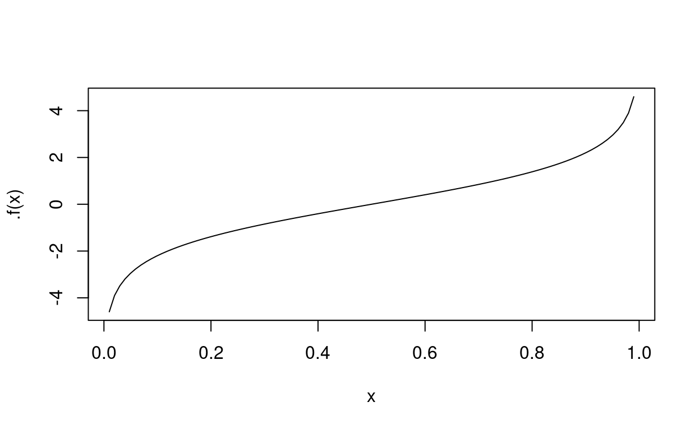
A bit of algebra should convince of the presence of vertical asymptotes AT \(X=0\) and \(x=1\).
The graph looks monotonic so there should be an inverse (found by flipping over the lines \(y=x\)).
Let’s try to build the inverse:
\[ \begin{aligned} g(x) &= \ln\biggl(\frac{x}{1-x}\biggr)\\ e^{g(x)}&= \frac{x}{1-x}\\ 1+e^{g(x)}&= \frac{1}{1-x}\\ \frac{1}{1+e^{g(x)}}&= 1-x\\ 1-\frac{1}{1+e^{g(x)}}&= x \end{aligned} \] Let’s simplify this a bit:
\[ \begin{aligned} f(y) &= 1-\frac{1}{1+e^{y}}\\ &=\frac{e^y}{1+e^y}\\ &=\frac{1}{1+e^{-y}} \end{aligned} \]
Let’s see if we did that correctly:
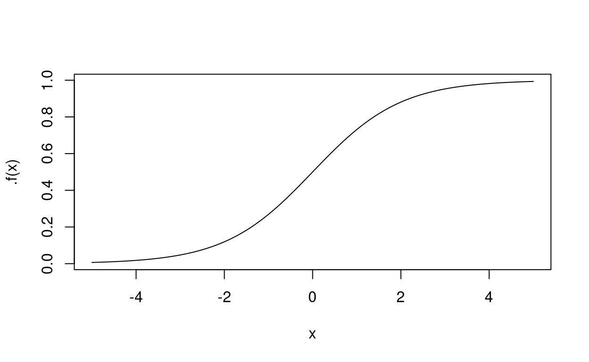
Congratulatoins– you’ve just derived the logistic curve The \(x\)-value will, in fact, be generated using a linear prediction model…
###Logistic regression
For any given observation \(i\) there is a probability (based upon \(x_i\)) of \(\pi_i\) for getting a 1 and \(1-\pi_1\) of getting a 0. All the observations with the same value of \(x\) should have the same probability of getting a 0 (or a 1). If we group all the observations with the same values for \(x\) we can think of the data as having \(m\) bins. The distribution of \(y\) in each bin will be \(\textrm{binom}(n,\pi}\) where \(n\) is the number of observations in the bin.
Recall the mean and variance of a binomial distribution is:
\[ \begin{aligned} y &\sim \textrm{Binom}(n,p) \\ \mathbb{E}(y) &= np\\ \textrm{VAR}(y) &= np(1-p) \end{aligned} \]
Since we have multiple bins, it’s more common to add subscripts to \(y\):
\[ y_i \sim \textrm{Binom}(n_i,\pi_i) \]
This captures the idea that there is a distribution for the response variable associated to each combination of levels of the explanatory values. What we are predicting is the mean of this distribution…. which, for the random variable \(y_i\) is \(n_i\pi_i\). The problem with this is that we really don’t want each bin to be a count– that’s too much variability and it would be hard to make an equation that smoothly varied. Instead if you think of the original 0,1 idea (0 for \(\textrm{no}\) and 1 for \(\textrm{yes}\)). You’ll notice that the distribution is a scaled by \(\frac{1}{n_i}\) for each \(y_i\). This makes the expected value \(\pi_i\)… and NOW we are in business.
So… if our resposne variable is 0 or 1 with a probability determined in a particular way by the explanatory variables then the distribution of the number of 1’s for each distinct combination of the explanatory variables is binomial where \(n\) depends upon the data and \(\pi\) is actually the average value for all the \(y\)’s with that same combination of explanatory levels.
If the expected value is transformed into the log odds (namely \(\ln\left(\frac{p}{1-p}\right)\)) Then our goal is to pick parameters for the linear part of the model that predicts the log-odds that is as consistent as possible with the observations. (This approach is called maximum liklihood). Inverting the log odds transformation predicts the value of \(\pi\) and takes the form of a logistic curve.
In other words we are finding the logistiic curve (or higher dimensional equivalent) of best fit for the data. Here, again, “best fit” means the choice of values for the liner model that are most consistent with the data.
The parameters that result from a logistic regression can be viewed in terms of the “log odds”.
LOCAL VS ABSOLUTE MAXIMUMS AND MINIMUMS DISTRIBUTIONS LIKLIHOOD FUNCTIONS MONTECARLO VERTICAL ASYMPTOTES AND HOLES LINEAR VS NONLINEAR functions (early) In any event…
line of best fit.
We can look up (see earlier in this document) the equation for finding the line of best fit ### extrema ### product rule ### gradient ### gradient descent
function properties
one-to-one and surjective
Order preserving functions
Functions that respect order or reverse order are called monotonic.
A function is monotonically increasing if
\[ x \le y \Rightarrow f(x) \le f(y)\quad (\textrm{for all }\ x,y) \] It is monotonically decreasing if \[ x \le y \Rightarrow f(x) \ge f(y)\quad (\textrm{for all }\ x,y) \] If the function is also one-to-one then we call it monotonically strictly increasing or monotonically strictly decreasing.
Future version should also include reading from: https://socialsciences.mcmaster.ca/jfox/Books/Applied-Regression-2E/Appendices.pdf
Means
You are very familiar with the arithmetic mean– it’s often known as the average. It’s also how \(\overline{X}\) is calculated. But that’s not the only measure of center. There are three means that have been in use for… well… longer than the language I’m using to write this tutorial has existed. All of them are a way to measure the central tendency of a set of values.
| Name | Equation | Simple Interpretation |
|---|---|---|
| Arithmetic Mean | \(\frac{1}{n}\sum x_i\) | If all \(n\) observations had the same value what would it have to be to have the same sum? |
| Geometric Mean | \(\sqrt[n]{\prod x_i}\) | If all \(n\) observations had the same value what would it have to be to have the same product? |
| Harmonic Mean | \(\frac{n}{\sum \frac{1}{x_i}}\) | If two trips over the same distance are made, the harmonic mean is the average speed of the two trips combined. |
Surprisingly the following relationship is always satisfied (assuming all the values are positive)
\[ \textrm{Arithmetic Mean} > \textrm{Geometric Mean} > \textrm{Harmonic Mean} \] I frequently see geometric means used in normalization procedures involving transcription levels and thousands of genes. I see the harmonic mean less frequently, but one place is the F1 measure for rating how good of a job a binary classification system performs.
Now read this nice introduction
ENTROPY GINI INDEX
Probabiity Refresher
Bayes Rule
Bayes rule is a deceptively simple equation. To set the stage let’s start with a a thought experiment.
Imagine that you are given a die to roll and you want to figure out whether or not the die is fair.
With no other place to start it would be reasonable to begin your assessment assuming that each face was equally possible. You could then roll the die repeatedly and keep track of the average number of times each value occurred.
Near the beginning of you rolled 3 sixes in a row you might start thinking that the sixes are more likely… however, if this occurred after rolling the die a couple hundred times then it would be easier to chalk it up to a lucky roll (especially since the probability of getting 3 sixes in a row on a fair die is about 1 out of 216).
Now let’s define some terminology.
The sample space is the set of possible die rolls. It is \(\Omega=\left\{1, 2, 3, 4, 5, 6\right\}\). Let’s use the letter \(D\) to represent the random variable that represents the possible results from rolling the die. In this particular situation the sample space is naturally partitioned into six events:
\[ \begin{aligned} A_1 &= \left\{1\right\}\\ A_2 &= \left\{2\right\}\\ A_3 &= \left\{3\right\}\\ A_4 &= \left\{4\right\}\\ A_5 &= \left\{5\right\}\\ A_6 &= \left\{6\right\}\\ \end{aligned} \]
The more compact way to represent the situation would be:
\[ A_i = \left\{i\right\}\quad \textrm{for }i \in \Omega \] It would also be pretty natural to produce a short hand for our probabilities too:
\[ p_i = \textrm{P}(D=i) \] (Ask me if that last equation doesn’t make immediate sense to you)
Notice that the six events we have described have two important properties:
- Together they cover the entire sample space
- The events have no outcomes in common
This is the formal definition of a partition.
Our fundamental strategy for figuring out if the die is fair or not is to calculate the values of \(p_i\). At each step we have a **best guess* to the true values of \(p_i\). We proceed as follows:
- Roll the die
- Update our best guess for every \(p_i\)
- Repeat… lots
In Bayesian statistics we call the best estimate just before rolling again the prior distribution. After we get more data our updated estimate is the posterior distribution
So let’s take a break and review Bayes rule.
We start with a sample space \(\Omega\) that can be exhaustively covered by \(n\) mutually exclusive events \(\left\{A_i\right\}\). That’s like the 6 possible results of rolling the die.
We then consider some event \(C\)– usually one that
\[ \begin{aligned} \Omega &= A_1 \cup A_2 \cup \cdots \cup A_n\\ A_i \cap A_j &= \emptyset\qquad(\textrm{for } i \ne j)\\ \end{aligned} \] ## Linear Combinations
For any vector space, a linear combination is a collection of components added together. Each component is comprised of a vector and a scalar. For example the following expression is a linear combination of the vectors \((3,4,-1)\) and \((1,-2,0)\)
\[ 2(3,4,-1) + (-3)(1,-2,0) \] Numbers can be considered as 1 dimensional vectors… so it makes sense to talk about linear combinations of numbers too. A surprising amount of mathematics arises from this idea and its generalizations. One minor generalization ignores the vector space requirement. For example, consider linear combinations of integers. For example we might consider linear combinations of 6 and 9. That would be any expression of the form \(a6 + b9\) where \(a,b \in \mathbb{Z}\). There can be a bit of confusion in the terminology because one would call the expression \((-1)*6+1*9\) a linear combination of 6 and 9, but one would also call 3 a linear combination of 6 and 9 because \((-1)*6+1*9=3\). Both are correct. The first contains a bit more information because, for example, \(1*6+(0)*9=6\) is a linear combination of 6 and 9, but so is \((-2)*6+2*9=6\). To keep things straight we will always refer to the multipliers as scalars in this situation… even though we might not be referring to a proper vector space.
In the example \((-1)*6 + 1*9=3\), 3 is a linear combination of 6 and 9, using the the scalars were -1 and 1.
Also notice that a weighted average of values is a linear combination as well, but with the special property that the scalars all add to 1. It is an interesting (and useful) fact that the weighted average of a set of numbers is somewhere between the mininum number and the maximum number. ADD EXERCISE HERE!
In the case of vectors where the scalars are more extensive, such as \(\mathbb{R}\), there are actually situations where there is only ONE linear combination (in the first sense) that will generate the same value (the linear combination in the second sense). This is completely determined by the nature of the vectors involved. A set of vectors with this property is called linearly independent.
It’s not as confusing as you might think. For example the set \((1,0,0),(0,1,0)\) is linearly independent.
The set of all linear combinations (in the seconds sense of the word) is called the span of a set of vectors.
If a linearly indpendent set of vectors spans a set, the vectors are also known as a basis. Every element in the set can be uniquely written as the lienar combination of the basis.
Graphs
In more advanced mathematics a graph is a collection of vertices (or nodes) and edges that connect them.
Here is a simple example:
TIKZexample
In a directed graph the edges have a natural direction. In an undirected graph there is no sense of direction.
Graphs can be represented visually as circles (the nodes) connected with either arrows (for a directed graph) or line segments (For an undirected graph).
In most applications parallel edges between the same two nodes are not allowed. In a directed graph two edges are not parallel unless they also share the same direction, so
\((\textrm{A})\rightarrow(\textrm{B})\) and \((\textrm{A})\leftarrow(\textrm{B})\)
is legal.
A loop is an edge joining a vertex to itself. These are also usually not allowed.
The original idea of a graph arose from the HERTZOG BRIDGE problem, and the edge was used to represent a path between the two sections of the park. The paths were not one-way so this was an undirected graph.
As the idea developed it became useful to associate weights to edges or to vertices (usually to edges). The weight might represent the cost or distance of a trip (or some more abstract variant of the same.)
A subgraph of a graph is a collection of that graph’s vertices and edges– usually with at least a few left out.
A complete graph (undirected) of order \(n\) has \(n\) vertices, all of which are directly connected to each other.
When a complete graph of order \(k\) is a subgraph of a larger graph, it is known as a clique. For \(k=2\) all the 2-cliques correspond to the edges of the graph (the edge and the two vertices that it connects.)
Given any two vertices we can consider a sequence of edges (if any) between those two vertices. This is known as a path. If there is a path leading from one vertex back to itself then that path is known as a cycle.
Graphs are frequently used to encode information about relationships between objects and one particularly interesting form of relationship that they encode is a dependence structurre amongst variables.
Under this idea each variable has an associated node, and variables that are not indpendent have an edge connecting them.
With vertices it is more common to associate a color to them. This gives rise to a number of interesting mathematical properties of a graph. For example, what is the fewest number of colors that can be used to color a graph such that no two vertices with the same color are connected.
One special case of this situation is a bipartite graph which can be colored with two colors alone.
Directed graphs with weighted edges can be encoded as a square matrix where the entries in the matrix correspond to the weight of the edges. We assign to each vertex an index and let the rows of the matrix recommend the source of an edge and the col represent the target. Under this convention, the row (say row \(i\)) and the column (say col \(j\)) correspond to the edge (if any) between node \(i\) and node \(j\). A value of 0 denotes no connection between the two nodes.
There are some really cool consequences to this style of encoding. First– we can, clearly, read the weight of the edges between two nodes directly off the matrix. This is known as the adjacency matrix of the graph. (For unweighted graphs we can use 0 and 1 to denote edge/not-edge)
Let’s suppose our matrix is called \(A\), then the entries of the matrix \(A^2\) (formed via matrix multiplication of the matrix \(A\) with itself). Show the sum of the cost of the sum of all paths of length two between the corresponding matrices.
This is interesting because (when weights are non-negative) it allows us to easily detect when two vertices are 2-reachable (if the number is 0 there is no path of length 2 between the two )
The sort of neat thing about all of this is that any square matrix can be considered to be an adjacency matrix– and the properties of the graph it describes tells us something about the linear transformation encoded by the matrix.
EXAMPLE
SHOW EXAMPLE
More stuff with the derivative
One of the more useful thing about calculating derivatives arises for functions that are built out of simpler functions using operations like
- addition/subtraction
- multiplication/division
- composition
For example. If the following is true:
\[ f(x) = g(x) + h(x) \] Then the function \(f(x)\) is built out of \(g(x)\) and \(h(x)\) combined with addition. It turns out that the derivative of \(f(x)\) is built out of the derivatives of \(g(x)\) and \(h(x)\) in the same fashion
\[ f'(x) = g'(x) + h'(x) \]
If we think of \(f(x)\) as specificying the position for some object at location \(x\) then \(f'(x)\) is the speed of that object at location \(x\).
So the speed of \(f(x)\) is the speed of \(g(x)\) plus the speed of \(h(x)\). In other words derivatives are additive.
It’s not quite as simple as the for products… but we can get a bit of a sense for what’s going on with a picture:
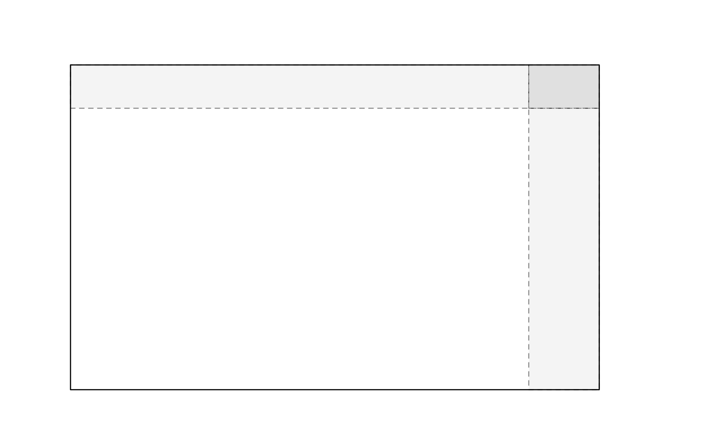
THink about the interior, rectange with white background and think of that as being \(f(x)g(x)\). As \(x\) changes, \(f(x)\) (the width) changes and so does \(g(x)\) the height.
You can think of the derivative as the instantaneous rate of change. But we approximate this by making small changes in \(x\) (which we call \(\Delta x\)) look at the result and take the ratio of the change in \(y\) and the change in \(x\): \(\frac{f(x+\Delta x)}{\Delta x}\). This is the approximate change. But if consider the ratio as \(\Delta x\) goes to 0 (gets really small) we get increasingly accurate approximations.
So consider this picture:
The width of the entire section is \(f(x+\Delta x)\). The first section is \(f(x)\). So the width of the darkest region is an approximation to \(f(x+\Delta x)-f(x)\approx f'(x) \Delta x\) #4 6 18 19 23
We would measure the value of \(f(x)g(x)\) by the number of unit squares that it encompasses and so to measure the rate of change we need to measure how the squares change. If \(g(x)\) were constant than we would go from \(f(x)\) to \(f(x) + \Delta x\). And the change would then be the rightmost shaded rectangle which is approximately \(g(x)f'(x) \Delta x\). If only \(g(x)\) were to change then \(g'(x)f(x)\Delta x\) would be the upper rectangle area. The littel tiny square in the right corner is then approximately \(f'(x)g'(x) (\Delta x)^2\) To figure out the overall (approximate) rate of change we then divide by \(\Delta x\).
So, in the limit:
\[ \left[f(x)g(x)\right]'=f'(x)g(x) + f(x)g'(x) \] Now the most interesting one is what happens when we compose \(f(g(x))-f(g(x+\Delta x))\). Try to think about what that would mean.
As \(x\) is changing this induces a change in \(g(x)\) which, in turn, induces a change in \(f(x)\). Let’s start by considering some of the easiest functions possible– linear ones:
\[ \begin{aligned} f(x) &= ax + b\\ g(x) &= cx + d\\ f(g(x))&= a(g(x))+b\\ &= a(cx+d) + b\\ &= acx + ad + b \end{aligned} \] The rate of change here is \(ac\). Notice this is the rate of change of \(f(x)\) times the rate of change of \(g(x)\)… Even though for these simle functions the rate of change is the same for every value of \(x\), if we are very clever we might notice that we care about the rate of change of \(f\) and \(g(x)\). So, it’s more accurate to write: \(f'(g(x))g'(x)\).
The magic of derivatives is that they make everything look linear (at least locally). So the rule is the same:
\[ [f(g(x))]' = f'(g(x))g'(x) \]
The speed of the composition is the speed of g at \(x\) times the speed of \(f\) at \(g(x)\).
We can see this to some extent
There are a lot of moving parts (ha!) in this diagram, so be sure to trace them all. The left panel shows \(x\), \(f(x)\) and the relationship between the speed of \(x\) and the speed of \(f(x)\) (as recorded by \(f'(x)\) and graphically represented by the slope of the dotted line). Watch how the horizontally moving gray dot and the vertically moving gray dot are connected by the graph of \(f(x)\). The dot on the horizontal line is the value of \(x\), it should be changing at a constant rate. The dot on the vertical line is value of \(f(x)\), it’s rate of change will depend upon the graph of \(f(x)\). Notice that when the slope of the tangent line is negative, the dot on the vertical line is going down. When the slope of the tangent line is positive, the dot on the vertical line is going up.
Further notice that the \(x\) and \(y\) limits on the graph are not identical… so the exact value of the slope is a bit hard to eyeball– you really do need to think about the equation \[\textrm{slope}=\frac{\textrm{rise}}{\textrm{run}}\] in order to calculate the exact value. Regardless, positive slopes and negative slopes are unaffectd by this x-scale vs y-scale issue.
When we compose two functions, we plug the output of one function into the input of the other. Notice that the value of the point on the second horizontal line is precisely the same as the value of the point on the vertical line in the first panel. Therefore the speed at which the first vertical point is moving is the same as the speed of the second horizontal point (with scale issues somewhat obscuring this fact)
The vertical line on the right panel is the composition \(g(f(x))\). It’s exact instantaneous velocity is indicated on the right panel. Try pausing the animation and looking at a few values of \(x\). Make sure the relationship makes sense… then just let the animation loop and soak it in for a bit.
Finally, notice that the velocity of the composition is determined by the multiplication of the slopes of the two dotted lines. These slopes are the velocity of \(f(x)\) at \(x\) and the velocity of \(g(x)\) at \(f(x)\). Read that last sentence a few times… I used \(g(x)\) on purpose (although the distinction between \(g(x)\) and \(f(x)\) in that final clause requires some careful thought.)
Let’s just say it one more way… IF,at a particular input, \(g(x)\) produces a velocity that is \(3\) times that of the velocity of the input. Then if the velocity at which the input is changing is 2, the total velocity would be 3*2=6. Now… if we patch the output of \(f(x)\) into the input of \(g(x)\)
this expression will generate an error in R↩